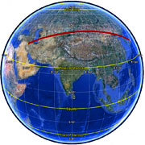

Calculate distance, bearing and more between Latitude/Longitude points
This page presents a variety of calculations for latitude/longitude points, with the formulæ
and code fragments for implementing them.
All these formulæ are for calculations on the basis of a spherical earth (ignoring ellipsoidal
effects) – which is accurate enough* for most purposes…
[In fact, the earth is very slightly ellipsoidal; using a spherical model gives errors typically up to
0.3% – see notes for further details].
Distance
This uses the ‘haversine’ formula to calculate the great-circle distance between
two points – that is, the shortest distance over the earth’s surface – giving an ‘as-the-crow-flies’
distance between the points (ignoring any hills they fly over, of course!).
Haversine formula:
a = sin²(Δφ/2) + cos(φ1)⋅cos(φ2)⋅sin²(Δλ/2)
c = 2⋅atan2(√a, √(1−a))
d = R⋅c
where
φ is latitude, λ is longitude, R is earth’s radius (mean radius = 6,371km);
note that angles need to be in radians to pass to trig functions!
JavaScript:
var R =6371;// kmvarφ1= lat1.toRadians();varφ2= lat2.toRadians();varΔφ=(lat2-lat1).toRadians();varΔλ=(lon2-lon1).toRadians();var a =Math.sin(Δφ/2)*Math.sin(Δφ/2)+Math.cos(φ1)*Math.cos(φ2)*Math.sin(Δλ/2)*Math.sin(Δλ/2);var c =2*Math.atan2(Math.sqrt(a),Math.sqrt(1-a));var d = R * c;
Note in these scripts, I generally use lat/lon for latitude/longitude in degrees, and φ/λ for latitude/longitude in radians
– having found that mixing degrees & radians is often the easiest route to head-scratching bugs...
The haversine formula1
‘remains particularly well-conditioned for numerical computation even at small distances’
– unlike calculations based on the spherical
law of cosines. The ‘versed sine’ is 1−cosθ, and the ‘half-versed-sine’ is
(1−cosθ)/2 = sin²(θ/2) as used above.
Once widely used by navigators, it was described by Roger Sinnott in
Sky & Telescope
magazine in 1984 (“Virtues of the Haversine”):
Sinnott explained that the angular separation between Mizar and Alcor in Ursa Major – 0°11′49.69″ –
could be accurately calculated on a TRS-80 using the haversine.
For the curious, c is the angular distance in radians,
and a is the square of half the chord length between the points.
A (remarkably marginal) performance improvement can be obtained,
of course, by factoring out the terms which get squared.
Spherical Law of Cosines
In fact, JavaScript (and most modern computers & languages) use ‘IEEE 754’ 64-bit floating-point numbers,
which provide 15 significant figures of precision.
By my estimate, with this precision, the simple
spherical
law of cosines formula (cos c = cos a cos b + sin a sin b cos C) gives well-conditioned
results down to distances as small as a few metres on the Earth’s surface.
(Note that the geodetic form of the law of cosines is rearranged
from the canonical one so that the latitude can be used directly, rather than the
colatitude).
This makes the simpler law of cosines a reasonable 1-line alternative
to the haversine
formula for many purposes. The choice may be driven by coding context,
available
trig functions (in different languages), etc – and, for very small
distances an equirectangualar approximation may be more suitable.
Law of cosines:
d =
acos( sin(φ1)⋅sin(φ2) + cos(φ1)⋅cos(φ2)⋅cos(Δλ) ) ⋅ R
JavaScript:
varφ1= lat1.toRadians(),φ2= lat2.toRadians(),Δλ=(lon2-lon1).toRadians(), R =6371;// gives d in kmvar d =Math.acos(Math.sin(φ1)*Math.sin(φ2)+Math.cos(φ1)*Math.cos(φ2)*Math.cos(Δλ))* R;
var x =(λ2-λ1)*Math.cos((φ1+φ2)/2);var y =(φ2-φ1);var d =Math.sqrt(x*x + y*y)* R;
This uses just one trig and one sqrt function – as against half-a-dozen trig functions
for cos law, and 7 trigs + 2 sqrts for haversine. Accuracy is somewhat complex: along meridians
there are no errors, otherwise they depend on distance, bearing, and latitude, but are small enough
for many purposes* (and often trivial compared
with the spherical approximation itself).
Alternatively, the polar coordinate flat-Earth formula can be used:
using the co-latitudes θ1 = π/2−φ1 and θ2 = π/2−φ2,
then d = R⋅√θ1² + θ2² − 2⋅θ1⋅θ2⋅cos(Δλ).
I’ve not compared accuracy.

Baghdad to Osaka –
not a constant bearing!
Bearing
In general, your current heading will vary as you follow a great circle path (orthodrome);
the final heading will differ from the initial heading by varying degrees according to distance
and latitude (if you were to go from say 35°N,45°E (Baghdad) to 35°N,135°E (Osaka), you would
start on a heading of 60° and end up on a heading of 120°!).
This formula is for the initial bearing (sometimes referred to as forward azimuth) which if
followed in a straight line along a great-circle arc will take you from the start point to the
end point:1
var y =Math.sin(λ2-λ1)*Math.cos(φ2);var x =Math.cos(φ1)*Math.sin(φ2)-Math.sin(φ1)*Math.cos(φ2)*Math.cos(λ2-λ1);var brng =Math.atan2(y, x).toDegrees();
Excel:
(lat/lon in radians)
=ATAN2(COS(lat1)*SIN(lat2)-SIN(lat1)*COS(lat2)*COS(lon2-lon1),
SIN(lon2-lon1)*COS(lat2))
*note that Excel reverses the arguments to ATAN2 – see notes below
Since atan2 returns values in the range -π ... +π (that is, -180° ... +180°),
to normalise the result to a compass bearing (in the range 0° ... 360°, with −ve values transformed
into the range 180° ... 360°), convert to degrees and then use (θ+360) % 360,
where % is modulo.
For final bearing, simply take the initial bearing from the end point to the start point
and reverse it (using θ = (θ+180) % 360).
Midpoint
This is the half-way point along a great circle path between the two points.1
Just as the initial bearing may vary from the final bearing, the midpoint may
not be located half-way between latitudes/longitudes; the midpoint between 35°N,45°E
and 35°N,135°E is around 45°N,90°E.
Destination point given distance and bearing from start point
Given a start point, initial bearing, and distance, this will
calculate the destination point and final bearing travelling along a (shortest distance) great
circle arc.
φ is latitude, λ is longitude, θ is the bearing (in radians, clockwise from north),
δ is the angular distance (in radians) d/R; d being the distance travelled, R the earth’s radius
φ1, λ1, θ1 : 1st point & bearing
φ2, λ2, θ2 : 2nd point & bearing
φ3, λ3 : intersection point
% = mod, | | = abs
note –
if sin(α1)=0 and sin(α2)=0: infinite solutions
if sin(α1)⋅sin(α2) < 0: ambiguous solution
this formulation is not always well-conditioned for meridional or equatorial lines
This is a lot simpler using vectors rather than spherical trigonometry:
see latlong-vectors.html (currently work in progress).
Cross-track distance
Here’s a new one: I’ve sometimes been asked about distance of a point from a great-circle path
(sometimes called cross track error).
Formula:
dxt = asin(sin(d13/R)⋅sin(θ13−θ12)) ⋅ R
where
d13 is distance from start point to third point
θ13 is (initial) bearing from start point to third point
θ12 is (initial) bearing from start point to end point
R is the earth’s radius
JavaScript:
var dXt =Math.asin(Math.sin(d13/R)*Math.sin(θ13-θ12))* R;
Here, the great-circle path is identified by a start point and an end
point – depending on what initial data you’re working from, you can use
the formulæ above to obtain the relevant distance and bearings. The
sign of dxt tells you which side of the path the third point is on.
The along-track distance, from the start point to the closest point on the path to the third point, is
Formula:
dat = acos(cos(d13/R)/cos(dxt/R)) ⋅ R
where
d13 is distance from start point to third point
dxt is cross-track distance
R is the earth’s radius
JavaScript:
var dAt =Math.acos(Math.cos(d13/R)/Math.cos(dXt/R))* R;
Closest point to the poles
And: ‘Clairaut’s formula’ will give you the maximum latitude of a great circle path,
given a bearing θ and latitude φ on the great circle:
A ‘rhumb line’ (or loxodrome) is a path of constant bearing, which crosses all meridians at
the same angle.
Sailors used to (and sometimes still) navigate along rhumb lines since it is easier to follow
a constant compass bearing than to be continually adjusting the bearing, as is needed to follow
a great circle. Rhumb lines are straight lines on a Mercator Projection map (also helpful for
navigation).
Rhumb lines are
generally longer than great-circle (orthodrome) routes. For instance, London to New
York is 4% longer along a rhumb line than along a great
circle – important for aviation fuel, but not particularly to sailing vessels. New York to
Beijing – close to the most extreme example possible (though not sailable!) – is 30% longer
along a rhumb line.
Key to calculations of rhumb lines is the
inverse Gudermannian function¹,
which gives the height on a Mercator projection map of a given latitude:
ln(tanφ + secφ) or ln( tan(π/4+φ/2) ).
For obsessives, there is even an ellipsoidal version, the ‘isometric latitude’:
ln( tan(π/4+φ/2) / [(1−e⋅sinφ)/(1+e⋅sinφ)]e/2).
This of course tends to infinity at the poles (in keeping with the Mercator projection).
The formulæ to derive Mercator projection easting and northing coordinates from spherical latitude and longitude
are then¹
E = R⋅λ
N = R⋅ln( tan(π/4+φ/2) )
The following formulæ are from Ed Williams’ aviation formulary.¹
Distance
Since a rhumb line is a straight line on a Mercator projection,
the distance between two points along a rhumb line is the length of that line (by Pythagoras);
but the distortion of the projection needs to be compensated for.
On a constant latitude course (travelling east-west), this compensation is simply cosφ;
in the general case, it is Δφ/Δψ where
Δψ = ln( tan(π/4+φ2/2)/tan(π/4+φ1/2) )
(the ‘projected’ latitude difference)
Formula:
Δψ = ln( tan(π/4+φ2/2) / tan(π/4+φ1/2) )
(‘projected’ latitude difference)
q = Δφ/Δψ (or cosφ for E-W line)
d = √(Δφ² + q²⋅Δλ²)⋅R
(Pythagoras)
where
φ is latitude, λ is longitude,
Δλ is taking shortest route (<180º),
R is the earth’s radius, ln is natural log
JavaScript:
varΔψ=Math.log(Math.tan(Math.PI/4+φ2/2)/Math.tan(Math.PI/4+φ1/2));var q =Math.abs(Δψ)>10e-12?Δφ/Δψ:Math.cos(φ1);// E-W course becomes ill-conditioned with 0/0// if dLon over 180° take shorter rhumb across anti-meridian:if(Math.abs(Δλ)>Math.PI)Δλ=Δλ>0?-(2*Math.PI-Δλ):(2*Math.PI+Δλ);var dist =Math.sqrt(Δφ*Δφ+ q*q*Δλ*Δλ)* R;
Bearing
A rhumb line is a straight line on a Mercator projection, with an angle on the projection equal to the compass bearing.
Formula:
Δψ = ln( tan(π/4+φ2/2) / tan(π/4+φ1/2) )
(‘projected’ latitude difference)
θ = atan2(Δλ, Δψ)
where
φ is latitude, λ is longitude,
Δλ is taking shortest route (<180º),
R is the earth’s radius, ln is natural log
JavaScript:
varΔψ=Math.log(Math.tan(Math.PI/4+φ2/2)/Math.tan(Math.PI/4+φ1/2));var q =Math.abs(Δψ)>10e-12?Δφ/Δψ:Math.cos(φ1);// E-W course becomes ill-conditioned with 0/0// if dLon over 180° take shorter rhumb across anti-meridian:if(Math.abs(Δλ)>Math.PI)Δλ=Δλ>0?-(2*Math.PI-Δλ):(2*Math.PI+Δλ);var brng =Math.atan2(Δλ,Δψ).toDegrees();
Destination
Given a start point and a distance d along constant bearing θ, this
will calculate the destination point. If you maintain a constant bearing along a rhumb
line, you will gradually spiral in towards one of the poles.
Formula:
δ = d/R
(angular distance)
Δψ = ln( tan(π/4+φ2/2) / tan(π/4+φ1/2) )
(‘projected’ latitude difference)
q = Δφ/Δψ (or cosφ for E-W line)
Δλ = δ⋅sin(θ) / q
φ2 = φ1 + δ⋅cosθ
λ2 = λ1 +Δλ
where
φ is latitude, λ is longitude, Δλ is
taking shortest route (<180°), ln is natural log and % is modulo,
R is the earth’s radius
JavaScript:
varΔφ=δ*Math.cos(θ);varφ2=φ1+Δλ;varΔψ=Math.log(Math.tan(φ2/2+Math.PI/4)/Math.tan(φ1/2+Math.PI/4));var q =Δψ>10e-12?Δφ/Δψ:Math.cos(φ1);// E-W course becomes ill-conditioned with 0/0varΔλ=δ*Math.sin(θ)/q;// check for some daft bugger going past the pole, normalise latitude if soif(Math.abs(φ2)>Math.PI/2)φ2=φ2>0?Math.PI-φ2:-Math.PI-φ2;λ2=(λ1+dLon+Math.PI)%(2*Math.PI)-Math.PI;
Mid-point
This formula for calculating the ‘loxodromic midpoint’, the point half-way along a
rhumb line between two points, is due to Robert Hill and
Clive Tooth1 (thx
Axel!).
if(Math.abs(λ2-λ1)>Math.PI)λ1+=2*Math.PI;// crossing anti-meridianvarφ3=(φ1+φ2)/2;var f1 =Math.tan(Math.PI/4+φ1/2);var f2 =Math.tan(Math.PI/4+φ2/2);var f3 =Math.tan(Math.PI/4+φ3/2);varλ3=((λ2-λ1)*Math.log(f3)+λ1*Math.log(f2)-λ2*Math.log(f1))/Math.log(f2/f1);if(!isFinite(λ3))λ3=(λ1+λ2)/2;// parallel of latitudeλ3=(λ3+3*Math.PI)%(2*Math.PI)-Math.PI;// normalise to -180..+180º
Using the scripts in web pages
Using these scripts in web pages would be something like the following:
Convert between degrees-minutes-seconds & decimal degrees
No, I’ve not included decimal minutes: a decimal system is easy, a sexagesimal
system has merits, but mixing the two is a complete sow’s ear. Switch off the option on your GPS!
Notes:
Accuracy: since the earth is not quite a sphere, there are small errors in
using spherical geometry; the earth is actually roughly ellipsoidal (or more precisely,
oblate spheroidal) with a radius varying between about 6,378km (equatorial) and 6,357km (polar),
and local radius of curvature varying from 6,336km (equatorial meridian) to 6,399km (polar).
6,371 km is the generally accepted value for the Earth’s mean radius. This means that errors
from assuming spherical geometry might be up to 0.55% crossing the equator, though generally
below 0.3%, depending on latitude and direction of travel. An accuracy of better than 3m in
1km is mostly good enough for me, but if you want greater accuracy, you could use the Vincenty formula
for calculating geodesic distances on ellipsoids, which gives results accurate to within 1mm.
(Out of sheer perversity – I’ve never needed such accuracy – I looked up this formula and discovered
the JavaScript implementation was simpler than I expected).
Trig functions take arguments in radians, so latitude, longitude, and
bearings in degrees (either decimal or degrees/minutes/seconds) need to be converted
to radians, rad = π.deg/180. When converting radians back to degrees (deg = 180.rad/π),
West is negative if using signed decimal degrees. For bearings, values in the range -π to
+π [-180° to +180°] need to be converted to 0 to +2π [0°–360°]; this
can be done by (brng+2.π)%2.π [or brng+360)%360] where % is the modulo operator.
The atan2() function widely used here takes two arguments, atan2(y, x), and computes
the arc tangent of the ratio y/x. It is more flexible than atan(y/x), since it handles x=0,
and it also returns values in all 4 quadrants -π to +π (the atan function returns values
in the range -π/2 to +π/2).
All bearings are with respect to true north, 0°=N, 90°=E, etc; if you are working
from a compass, magnetic north varies from true north in a complex way around the earth,
and the difference has to be compensated for by variances indicated on local maps.
If you implement any formula involving atan2 in Microsoft Excel, you will need to
reverse the arguments, as Excel
has them the opposite way around from JavaScript
– conventional order is atan2(y, x), but Excel uses atan2(x, y). To use atan2 in a (VBA) macro,
you can use WorksheetFunction.Atan2().
If you are using Google Maps, several of these functions are now provided in the Google
Maps API V3 ‘spherical’ library (computeDistanceBetween(), computeHeading(), computeOffset(),
interpolate(), etc; note they use a default Earth radius of 6,378,137 meters).
See below for the source code of the JavaScript implementation.
These functions should be simple to translate into other languages if required.
Update January 2010: I have revised the scripts to be structured as methods of
a LatLon object. Of course, JavaScript is a prototype-based
rather than class-based language,
so this is only nominally a class, but isolating code into a separate namespace is good JavaScript
practice, and this approach may also make it clearer to implement these functions in other languages.
If you’re not familiar with JavaScript syntax, LatLon.prototype.distanceTo = function(point)
{ ... }, for instance, defines a ‘distanceTo’ method of the LatLon object
(/class) which takes a LatLon object as a parameter (and returns a number). The
Geo namespace acts as a static class for geodesy formatting / parsing / conversion functions.
I have extended (polluted, if you like) the base JavaScript object prototypes with trim(), toRadians()
toDegrees(), and toPrecisionFixed() methods. I’ve adopted JSDoc format for the descriptions.
I have also created a page illustrating the use of the spherical law of cosines for selecting
points from a database within a specified bounding circle – the example is based on MySQL+PDO,
but should be extensible to other DBMS platforms.
Several people have asked about example Excel spreadsheets, so I have implemented the
distance & bearing and the destination
point formulæ as spreadsheets, in a form which breaks down the all stages involved to illustrate
the operation.
I offer these formulæ & scripts for free use and adaptation as my contribution to the open-source
info-sphere from which I have received so much. You are welcome to re-use these scripts [under
a simple attribution license, without
any warranty express or implied] provided solely that you retain my copyright notice and a
reference to this page.
If you would like to show your appreciation and support continued development of these scripts,
I would most gratefully accept donations.
If you need any advice or development work done, I am available for consultancy.
/* - - - - - - - - - - - - - - - - - - - - - - - - - - - - - - - - - - - - - - - - - - - - - - - */
/* Latitude/longitude spherical geodesy formulae & scripts (c) Chris Veness 2002-2014 */
/* - www.movable-type.co.uk/scripts/latlong.html */
/* */
/* Sample usage: */
/* var p1 = new LatLon(51.5136, -0.0983); */
/* var p2 = new LatLon(51.4778, -0.0015); */
/* var dist = p1.distanceTo(p2); // in km */
/* var brng = p1.bearingTo(p2); // in degrees clockwise from north */
/* ... etc */
/* - - - - - - - - - - - - - - - - - - - - - - - - - - - - - - - - - - - - - - - - - - - - - - - */
/* - - - - - - - - - - - - - - - - - - - - - - - - - - - - - - - - - - - - - - - - - - - - - - - */
/* Note that minimal error checking is performed in this example code! */
/* - - - - - - - - - - - - - - - - - - - - - - - - - - - - - - - - - - - - - - - - - - - - - - - */
/**
* Object LatLon: tools for geodetic calculations
*
* @requires Geo
*/
/**
* Creates a point on the earth's surface at the supplied latitude / longitude
*
* @constructor
* @param {Number} lat: latitude in degrees
* @param {Number} lon: longitude in degrees
* @param {Number} [radius=6371]: radius of earth if different value is required from standard 6,371km
*/
function LatLon(lat, lon, radius) {
if (typeof(radius) == 'undefined') radius = 6371; // earth's mean radius in km
this.lat = Number(lat);
this.lon = Number(lon);
this.radius = Number(radius);
}
/**
* Returns the distance from this point to the supplied point (using haversine formula)
*
* @this {LatLon} latitude/longitude of origin point
* @param {LatLon} point: latitude/longitude of destination point
* @param {Number} [precision=4]: number of significant digits to use for returned value
* @returns {Number} distance between this point and destination point, in km
*/
LatLon.prototype.distanceTo = function(point, precision) {
// default 4 significant figures reflects typical 0.3% accuracy of spherical model
if (typeof precision == 'undefined') precision = 4;
var R = this.radius;
var φ1 = this.lat.toRadians(), λ1 = this.lon.toRadians();
var φ2 = point.lat.toRadians(), λ2 = point.lon.toRadians();
var Δφ = φ2 - φ1;
var Δλ = λ2 - λ1;
var a = Math.sin(Δφ/2) * Math.sin(Δφ/2) +
Math.cos(φ1) * Math.cos(φ2) *
Math.sin(Δλ/2) * Math.sin(Δλ/2);
var c = 2 * Math.atan2(Math.sqrt(a), Math.sqrt(1-a));
var d = R * c;
return d.toPrecisionFixed(Number(precision));
}
/**
* Returns the (initial) bearing from this point to the supplied point, in degrees
* see http://williams.best.vwh.net/avform.htm#Crs
*
* @this {LatLon} latitude/longitude of origin point
* @param {LatLon} point: latitude/longitude of destination point
* @returns {Number} initial bearing in degrees from North
*/
LatLon.prototype.bearingTo = function(point) {
var φ1 = this.lat.toRadians(), φ2 = point.lat.toRadians();
var Δλ = (point.lon-this.lon).toRadians();
var y = Math.sin(Δλ) * Math.cos(φ2);
var x = Math.cos(φ1)*Math.sin(φ2) -
Math.sin(φ1)*Math.cos(φ2)*Math.cos(Δλ);
var θ = Math.atan2(y, x);
return (θ.toDegrees()+360) % 360;
}
/**
* Returns final bearing arriving at supplied destination point from this point; the final bearing
* will differ from the initial bearing by varying degrees according to distance and latitude
*
* @this {LatLon} latitude/longitude of origin point
* @param {LatLon} point: latitude/longitude of destination point
* @returns {Number} final bearing in degrees from North
*/
LatLon.prototype.finalBearingTo = function(point) {
// get initial bearing from supplied point back to this point...
var φ1 = point.lat.toRadians(), φ2 = this.lat.toRadians();
var Δλ = (this.lon-point.lon).toRadians();
var y = Math.sin(Δλ) * Math.cos(φ2);
var x = Math.cos(φ1)*Math.sin(φ2) -
Math.sin(φ1)*Math.cos(φ2)*Math.cos(Δλ);
var θ = Math.atan2(y, x);
// ... & reverse it by adding 180°
return (θ.toDegrees()+180) % 360;
}
/**
* Returns the midpoint between this point and the supplied point.
* see http://mathforum.org/library/drmath/view/51822.html for derivation
*
* @this {LatLon} latitude/longitude of origin point
* @param {LatLon} point: latitude/longitude of destination point
* @returns {LatLon} midpoint between this point and the supplied point
*/
LatLon.prototype.midpointTo = function(point) {
var φ1 = this.lat.toRadians(), λ1 = this.lon.toRadians();
var φ2 = point.lat.toRadians();
var Δλ = (point.lon-this.lon).toRadians();
var Bx = Math.cos(φ2) * Math.cos(Δλ);
var By = Math.cos(φ2) * Math.sin(Δλ);
var φ3 = Math.atan2(Math.sin(φ1)+Math.sin(φ2),
Math.sqrt( (Math.cos(φ1)+Bx)*(Math.cos(φ1)+Bx) + By*By) );
var λ3 = λ1 + Math.atan2(By, Math.cos(φ1) + Bx);
λ3 = (λ3+3*Math.PI) % (2*Math.PI) - Math.PI; // normalise to -180..+180º
return new LatLon(φ3.toDegrees(), λ3.toDegrees());
}
/**
* Returns the destination point from this point having travelled the given distance (in km) on the
* given initial bearing (bearing may vary before destination is reached)
*
* see http://williams.best.vwh.net/avform.htm#LL
*
* @this {LatLon} latitude/longitude of origin point
* @param {Number} brng: initial bearing in degrees
* @param {Number} dist: distance in km
* @returns {LatLon} destination point
*/
LatLon.prototype.destinationPoint = function(brng, dist) {
var θ = Number(brng).toRadians();
var δ = Number(dist) / this.radius; // angular distance in radians
var φ1 = this.lat.toRadians();
var λ1 = this.lon.toRadians();
var φ2 = Math.asin( Math.sin(φ1)*Math.cos(δ) +
Math.cos(φ1)*Math.sin(δ)*Math.cos(θ) );
var λ2 = λ1 + Math.atan2(Math.sin(θ)*Math.sin(δ)*Math.cos(φ1),
Math.cos(δ)-Math.sin(φ1)*Math.sin(φ2));
λ2 = (λ2+3*Math.PI) % (2*Math.PI) - Math.PI; // normalise to -180..+180º
return new LatLon(φ2.toDegrees(), λ2.toDegrees());
}
/**
* Returns the point of intersection of two paths defined by point and bearing
*
* see http://williams.best.vwh.net/avform.htm#Intersection
*
* @param {LatLon} p1: first point
* @param {Number} brng1: initial bearing from first point
* @param {LatLon} p2: second point
* @param {Number} brng2: initial bearing from second point
* @returns {LatLon} destination point (null if no unique intersection defined)
*/
LatLon.intersection = function(p1, brng1, p2, brng2) {
var φ1 = p1.lat.toRadians(), λ1 = p1.lon.toRadians();
var φ2 = p2.lat.toRadians(), λ2 = p2.lon.toRadians();
var θ13 = Number(brng1).toRadians(), θ23 = Number(brng2).toRadians();
var Δφ = φ2-φ1, Δλ = λ2-λ1;
var δ12 = 2*Math.asin( Math.sqrt( Math.sin(Δφ/2)*Math.sin(Δφ/2) +
Math.cos(φ1)*Math.cos(φ2)*Math.sin(Δλ/2)*Math.sin(Δλ/2) ) );
if (δ12 == 0) return null;
// initial/final bearings between points
var θ1 = Math.acos( ( Math.sin(φ2) - Math.sin(φ1)*Math.cos(δ12) ) /
( Math.sin(δ12)*Math.cos(φ1) ) );
if (isNaN(θ1)) θ1 = 0; // protect against rounding
var θ2 = Math.acos( ( Math.sin(φ1) - Math.sin(φ2)*Math.cos(δ12) ) /
( Math.sin(δ12)*Math.cos(φ2) ) );
if (Math.sin(λ2-λ1) > 0) {
θ12 = θ1;
θ21 = 2*Math.PI - θ2;
} else {
θ12 = 2*Math.PI - θ1;
θ21 = θ2;
}
var α1 = (θ13 - θ12 + Math.PI) % (2*Math.PI) - Math.PI; // angle 2-1-3
var α2 = (θ21 - θ23 + Math.PI) % (2*Math.PI) - Math.PI; // angle 1-2-3
if (Math.sin(α1)==0 && Math.sin(α2)==0) return null; // infinite intersections
if (Math.sin(α1)*Math.sin(α2) < 0) return null; // ambiguous intersection
//α1 = Math.abs(α1);
//α2 = Math.abs(α2);
// ... Ed Williams takes abs of α1/α2, but seems to break calculation?
var α3 = Math.acos( -Math.cos(α1)*Math.cos(α2) +
Math.sin(α1)*Math.sin(α2)*Math.cos(δ12) );
var δ13 = Math.atan2( Math.sin(δ12)*Math.sin(α1)*Math.sin(α2),
Math.cos(α2)+Math.cos(α1)*Math.cos(α3) )
var φ3 = Math.asin( Math.sin(φ1)*Math.cos(δ13) +
Math.cos(φ1)*Math.sin(δ13)*Math.cos(θ13) );
var Δλ13 = Math.atan2( Math.sin(θ13)*Math.sin(δ13)*Math.cos(φ1),
Math.cos(δ13)-Math.sin(φ1)*Math.sin(φ3) );
var λ3 = λ1 + Δλ13;
λ3 = (λ3+3*Math.PI) % (2*Math.PI) - Math.PI; // normalise to -180..+180º
return new LatLon(φ3.toDegrees(), λ3.toDegrees());
}
/* - - - - - - - - - - - - - - - - - - - - - - - - - - - - - - - - - - - - - - - - - - - - - - - */
/**
* Returns the distance from this point to the supplied point, in km, travelling along a rhumb line
*
* see http://williams.best.vwh.net/avform.htm#Rhumb
*
* @this {LatLon} latitude/longitude of origin point
* @param {LatLon} point: latitude/longitude of destination point
* @returns {Number} distance in km between this point and destination point
*/
LatLon.prototype.rhumbDistanceTo = function(point) {
var R = this.radius;
var φ1 = this.lat.toRadians(), φ2 = point.lat.toRadians();
var Δφ = φ2 - φ1;
var Δλ = Math.abs(point.lon-this.lon).toRadians();
// if dLon over 180° take shorter rhumb line across the anti-meridian:
if (Math.abs(Δλ) > Math.PI) Δλ = Δλ>0 ? -(2*Math.PI-Δλ) : (2*Math.PI+Δλ);
// on Mercator projection, longitude gets increasing stretched by latitude; q is the 'stretch factor'
var Δψ = Math.log(Math.tan(φ2/2+Math.PI/4)/Math.tan(φ1/2+Math.PI/4));
// the stretch factor becomes ill-conditioned along E-W line (0/0); use empirical tolerance to avoid it
var q = Math.abs(Δψ) > 10e-12 ? Δφ/Δψ : Math.cos(φ1);
// distance is pythagoras on 'stretched' Mercator projection
var δ = Math.sqrt(Δφ*Δφ + q*q*Δλ*Δλ); // angular distance in radians
var dist = δ * R;
return dist.toPrecisionFixed(4); // 4 sig figs reflects typical 0.3% accuracy of spherical model
}
/**
* Returns the bearing from this point to the supplied point along a rhumb line, in degrees
*
* @this {LatLon} latitude/longitude of origin point
* @param {LatLon} point: latitude/longitude of destination point
* @returns {Number} bearing in degrees from North
*/
LatLon.prototype.rhumbBearingTo = function(point) {
var φ1 = this.lat.toRadians(), φ2 = point.lat.toRadians();
var Δλ = (point.lon-this.lon).toRadians();
// if dLon over 180° take shorter rhumb line across the anti-meridian:
if (Math.abs(Δλ) > Math.PI) Δλ = Δλ>0 ? -(2*Math.PI-Δλ) : (2*Math.PI+Δλ);
var Δψ = Math.log(Math.tan(φ2/2+Math.PI/4)/Math.tan(φ1/2+Math.PI/4));
var θ = Math.atan2(Δλ, Δψ);
return (θ.toDegrees()+360) % 360;
}
/**
* Returns the destination point from this point having travelled the given distance (in km) on the
* given bearing along a rhumb line
*
* @this {LatLon} latitude/longitude of origin point
* @param {Number} brng: bearing in degrees from North
* @param {Number} dist: distance in km
* @returns {LatLon} destination point
*/
LatLon.prototype.rhumbDestinationPoint = function(brng, dist) {
var δ = Number(dist) / this.radius; // angular distance in radians
var φ1 = this.lat.toRadians(), λ1 = this.lon.toRadians();
var θ = Number(brng).toRadians();
var Δφ = δ * Math.cos(θ);
var φ2 = φ1 + Δφ;
// check for some daft bugger going past the pole, normalise latitude if so
if (Math.abs(φ2) > Math.PI/2) φ2 = φ2>0 ? Math.PI-φ2 : -Math.PI-φ2;
var Δψ = Math.log(Math.tan(φ2/2+Math.PI/4)/Math.tan(φ1/2+Math.PI/4));
var q = Math.abs(Δψ) > 10e-12 ? Δφ / Δψ : Math.cos(φ1); // E-W course becomes ill-conditioned with 0/0
var Δλ = δ*Math.sin(θ)/q;
var λ2 = λ1 + Δλ;
λ2 = (λ2 + 3*Math.PI) % (2*Math.PI) - Math.PI; // normalise to -180..+180º
return new LatLon(φ2.toDegrees(), λ2.toDegrees());
}
/**
* Returns the loxodromic midpoint (along a rhumb line) between this point and the supplied point.
* see http://mathforum.org/kb/message.jspa?messageID=148837
*
* @this {LatLon} latitude/longitude of origin point
* @param {LatLon} point: latitude/longitude of destination point
* @returns {LatLon} midpoint between this point and the supplied point
*/
LatLon.prototype.rhumbMidpointTo = function(point) {
var φ1 = this.lat.toRadians(), λ1 = this.lon.toRadians();
var φ2 = point.lat.toRadians(), λ2 = point.lon.toRadians();
if (Math.abs(λ2-λ1) > Math.PI) λ1 += 2*Math.PI; // crossing anti-meridian
var φ3 = (φ1+φ2)/2;
var f1 = Math.tan(Math.PI/4 + φ1/2);
var f2 = Math.tan(Math.PI/4 + φ2/2);
var f3 = Math.tan(Math.PI/4 + φ3/2);
var λ3 = ( (λ2-λ1)*Math.log(f3) + λ1*Math.log(f2) - λ2*Math.log(f1) ) / Math.log(f2/f1);
if (!isFinite(λ3)) λ3 = (λ1+λ2)/2; // parallel of latitude
λ3 = (λ3 + 3*Math.PI) % (2*Math.PI) - Math.PI; // normalise to -180..+180º
return new LatLon(φ3.toDegrees(), λ3.toDegrees());
}
/* - - - - - - - - - - - - - - - - - - - - - - - - - - - - - - - - - - - - - - - - - - - - - - - */
/**
* Returns a string representation of this point; format and dp as per lat()/lon()
*
* @this {LatLon} latitude/longitude of origin point
* @param {String} [format]: return value as 'd', 'dm', 'dms'
* @param {Number} [dp=0|2|4]: number of decimal places to display
* @returns {String} comma-separated latitude/longitude
*/
LatLon.prototype.toString = function(format, dp) {
if (typeof format == 'undefined') format = 'dms';
return Geo.toLat(this.lat, format, dp) + ', ' + Geo.toLon(this.lon, format, dp);
}
/* - - - - - - - - - - - - - - - - - - - - - - - - - - - - - - - - - - - - - - - - - - - - - - - */
// ---- extend Number object with methods for converting degrees/radians
/** Converts numeric degrees to radians */
if (typeof Number.prototype.toRadians == 'undefined') {
Number.prototype.toRadians = function() {
return this * Math.PI / 180;
}
}
/** Converts radians to numeric (signed) degrees */
if (typeof Number.prototype.toDegrees == 'undefined') {
Number.prototype.toDegrees = function() {
return this * 180 / Math.PI;
}
}
/**
* Formats the significant digits of a number, using only fixed-point notation (no exponential)
*
* @param {Number} precision: Number of significant digits to appear in the returned string
* @returns {String} A string representation of number which contains precision significant digits
*/
if (typeof Number.prototype.toPrecisionFixed == 'undefined') {
Number.prototype.toPrecisionFixed = function(precision) {
// use standard toPrecision method
var n = this.toPrecision(precision);
// ... but replace +ve exponential format with trailing zeros
n = n.replace(/(.+)e\+(.+)/, function(n, sig, exp) {
sig = sig.replace(/\./, ''); // remove decimal from significand
l = sig.length - 1;
while (exp-- > l) sig = sig + '0'; // append zeros from exponent
return sig;
});
// ... and replace -ve exponential format with leading zeros
n = n.replace(/(.+)e-(.+)/, function(n, sig, exp) {
sig = sig.replace(/\./, ''); // remove decimal from significand
while (exp-- > 1) sig = '0' + sig; // prepend zeros from exponent
return '0.' + sig;
});
return n;
}
}
/** Trims whitespace from string (q.v. blog.stevenlevithan.com/archives/faster-trim-javascript) */
if (typeof String.prototype.trim == 'undefined') {
String.prototype.trim = function() {
return String(this).replace(/^\s\s*/, '').replace(/\s\s*$/, '');
}
}
/** Returns the sign of a number, indicating whether the number is positive, negative or zero */
if (typeof Math.sign == 'undefined') {
// stackoverflow.com/questions/7624920/number-sign-in-javascript
Math.sign = function(x) {
return typeof x === 'number' ? x ? x < 0 ? -1 : 1 : x === x ? 0 : NaN : NaN;
}
}
/* - - - - - - - - - - - - - - - - - - - - - - - - - - - - - - - - - - - - - - - - - - - - - - - */
if (!window.console) window.console = { log: function() {} };
/* - - - - - - - - - - - - - - - - - - - - - - - - - - - - - - - - - - - - - - - - - - - - - - - */
/* Geodesy representation conversion functions (c) Chris Veness 2002-2012 */
/* - www.movable-type.co.uk/scripts/latlong.html */
/* */
/* Sample usage: */
/* var lat = Geo.parseDMS('51° 28′ 40.12″ N'); */
/* var lon = Geo.parseDMS('000° 00′ 05.31″ W'); */
/* var p1 = new LatLon(lat, lon); */
/* - - - - - - - - - - - - - - - - - - - - - - - - - - - - - - - - - - - - - - - - - - - - - - - */
var Geo = {}; // Geo namespace, representing static class
/**
* Parses string representing degrees/minutes/seconds into numeric degrees
*
* This is very flexible on formats, allowing signed decimal degrees, or deg-min-sec optionally
* suffixed by compass direction (NSEW). A variety of separators are accepted (eg 3º 37' 09"W)
* or fixed-width format without separators (eg 0033709W). Seconds and minutes may be omitted.
* (Note minimal validation is done).
*
* @param {String|Number} dmsStr: Degrees or deg/min/sec in variety of formats
* @returns {Number} Degrees as decimal number
* @throws {TypeError} dmsStr is an object, perhaps DOM object without .value?
*/
Geo.parseDMS = function(dmsStr) {
if (typeof deg == 'object') throw new TypeError('Geo.parseDMS - dmsStr is [DOM?] object');
// check for signed decimal degrees without NSEW, if so return it directly
if (typeof dmsStr === 'number' && isFinite(dmsStr)) return Number(dmsStr);
// strip off any sign or compass dir'n & split out separate d/m/s
var dms = String(dmsStr).trim().replace(/^-/,'').replace(/[NSEW]$/i,'').split(/[^0-9.,]+/);
if (dms[dms.length-1]=='') dms.splice(dms.length-1); // from trailing symbol
if (dms == '') return NaN;
// and convert to decimal degrees...
switch (dms.length) {
case 3: // interpret 3-part result as d/m/s
var deg = dms[0]/1 + dms[1]/60 + dms[2]/3600;
break;
case 2: // interpret 2-part result as d/m
var deg = dms[0]/1 + dms[1]/60;
break;
case 1: // just d (possibly decimal) or non-separated dddmmss
var deg = dms[0];
// check for fixed-width unseparated format eg 0033709W
//if (/[NS]/i.test(dmsStr)) deg = '0' + deg; // - normalise N/S to 3-digit degrees
//if (/[0-9]{7}/.test(deg)) deg = deg.slice(0,3)/1 + deg.slice(3,5)/60 + deg.slice(5)/3600;
break;
default:
return NaN;
}
if (/^-|[WS]$/i.test(dmsStr.trim())) deg = -deg; // take '-', west and south as -ve
return Number(deg);
}
/**
* Convert decimal degrees to deg/min/sec format
* - degree, prime, double-prime symbols are added, but sign is discarded, though no compass
* direction is added
*
* @private
* @param {Number} deg: Degrees
* @param {String} [format=dms]: Return value as 'd', 'dm', 'dms'
* @param {Number} [dp=0|2|4]: No of decimal places to use - default 0 for dms, 2 for dm, 4 for d
* @returns {String} deg formatted as deg/min/secs according to specified format
* @throws {TypeError} deg is an object, perhaps DOM object without .value?
*/
Geo.toDMS = function(deg, format, dp) {
if (typeof deg == 'object') throw new TypeError('Geo.toDMS - deg is [DOM?] object');
if (isNaN(deg)) return null; // give up here if we can't make a number from deg
// default values
if (typeof format == 'undefined') format = 'dms';
if (typeof dp == 'undefined') {
switch (format) {
case 'd': dp = 4; break;
case 'dm': dp = 2; break;
case 'dms': dp = 0; break;
default: format = 'dms'; dp = 0; // be forgiving on invalid format
}
}
deg = Math.abs(deg); // (unsigned result ready for appending compass dir'n)
switch (format) {
case 'd':
d = deg.toFixed(dp); // round degrees
if (d<100) d = '0' + d; // pad with leading zeros
if (d<10) d = '0' + d;
dms = d + '\u00B0'; // add º symbol
break;
case 'dm':
var min = (deg*60).toFixed(dp); // convert degrees to minutes & round
var d = Math.floor(min / 60); // get component deg/min
var m = (min % 60).toFixed(dp); // pad with trailing zeros
if (d<100) d = '0' + d; // pad with leading zeros
if (d<10) d = '0' + d;
if (m<10) m = '0' + m;
dms = d + '\u00B0' + m + '\u2032'; // add º, ' symbols
break;
case 'dms':
var sec = (deg*3600).toFixed(dp); // convert degrees to seconds & round
var d = Math.floor(sec / 3600); // get component deg/min/sec
var m = Math.floor(sec/60) % 60;
var s = (sec % 60).toFixed(dp); // pad with trailing zeros
if (d<100) d = '0' + d; // pad with leading zeros
if (d<10) d = '0' + d;
if (m<10) m = '0' + m;
if (s<10) s = '0' + s;
dms = d + '\u00B0' + m + '\u2032' + s + '\u2033'; // add º, ', " symbols
break;
}
return dms;
}
/**
* Convert numeric degrees to deg/min/sec latitude (suffixed with N/S)
*
* @param {Number} deg: Degrees
* @param {String} [format=dms]: Return value as 'd', 'dm', 'dms'
* @param {Number} [dp=0|2|4]: No of decimal places to use - default 0 for dms, 2 for dm, 4 for d
* @returns {String} Deg/min/seconds
*/
Geo.toLat = function(deg, format, dp) {
var lat = Geo.toDMS(deg, format, dp);
return lat==null ? '–' : lat.slice(1) + (deg<0 ? 'S' : 'N'); // knock off initial '0' for lat!
}
/**
* Convert numeric degrees to deg/min/sec longitude (suffixed with E/W)
*
* @param {Number} deg: Degrees
* @param {String} [format=dms]: Return value as 'd', 'dm', 'dms'
* @param {Number} [dp=0|2|4]: No of decimal places to use - default 0 for dms, 2 for dm, 4 for d
* @returns {String} Deg/min/seconds
*/
Geo.toLon = function(deg, format, dp) {
var lon = Geo.toDMS(deg, format, dp);
return lon==null ? '–' : lon + (deg<0 ? 'W' : 'E');
}
/**
* Convert numeric degrees to deg/min/sec as a bearing (0º..360º)
*
* @param {Number} deg: Degrees
* @param {String} [format=dms]: Return value as 'd', 'dm', 'dms'
* @param {Number} [dp=0|2|4]: No of decimal places to use - default 0 for dms, 2 for dm, 4 for d
* @returns {String} Deg/min/seconds
*/
Geo.toBrng = function(deg, format, dp) {
deg = (Number(deg)+360) % 360; // normalise -ve values to 180º..360º
var brng = Geo.toDMS(deg, format, dp);
return brng==null ? '–' : brng.replace('360', '0'); // just in case rounding took us up to 360º!
}
/* - - - - - - - - - - - - - - - - - - - - - - - - - - - - - - - - - - - - - - - - - - - - - - - */
if (!window.console) window.console = { log: function() {} };
 I offer these formulæ & scripts for free use and adaptation as my contribution to the open-source
info-sphere from which I have received so much. You are welcome to re-use these scripts [under
a simple attribution license, without
any warranty express or implied] provided solely that you retain my copyright notice and a
reference to this page.
I offer these formulæ & scripts for free use and adaptation as my contribution to the open-source
info-sphere from which I have received so much. You are welcome to re-use these scripts [under
a simple attribution license, without
any warranty express or implied] provided solely that you retain my copyright notice and a
reference to this page.